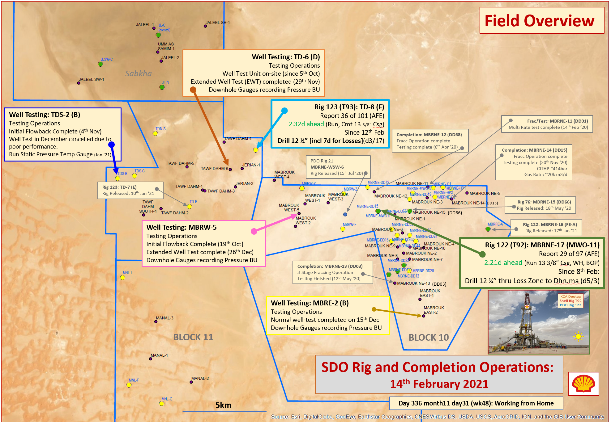

Well-Tracker
Oman Gas Dashboard
Well Delivery Dashboard
Frac&Test Dashboard
WD Sprint
WD Risk Register
WD PCAP
WRFM
Leave Planner
dWFS
Sirus
DEP
Well Delivery Stats
This dashboard is tracking the Well Delivery performance of Oman Shell.
28
Wells Drilled
20
Wells Frac&Tested
8
Wells Matured by Shell
Ongoing Operations

Interactive map to be made...